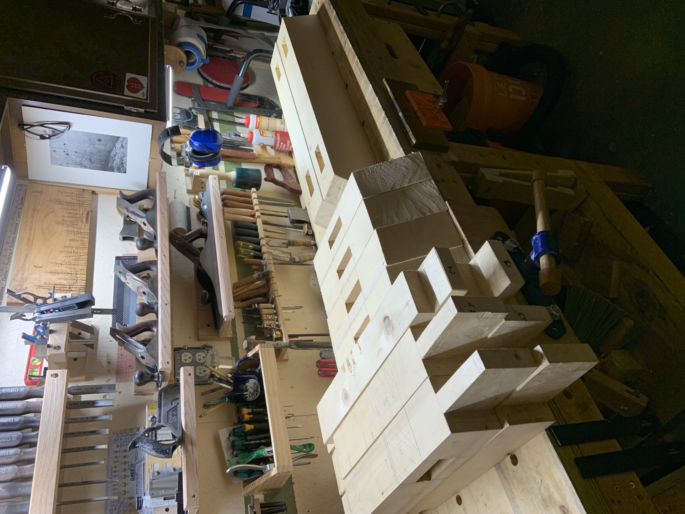
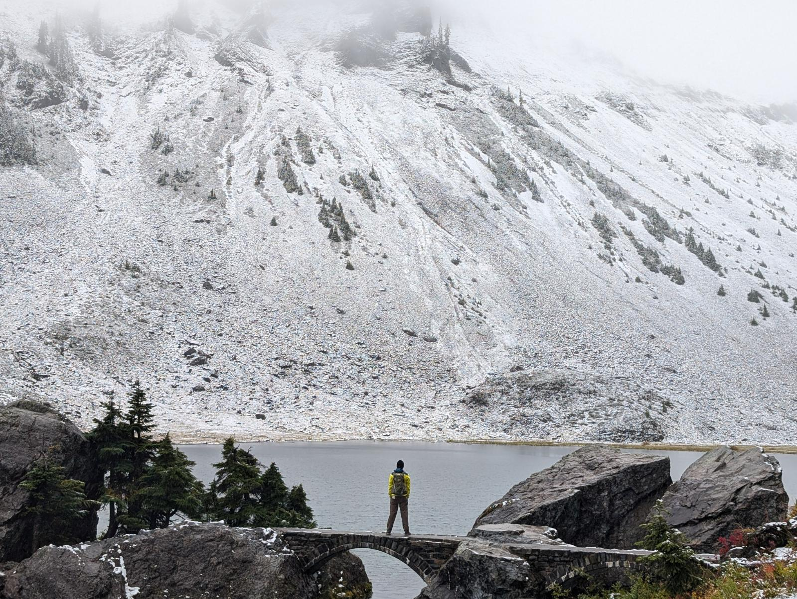
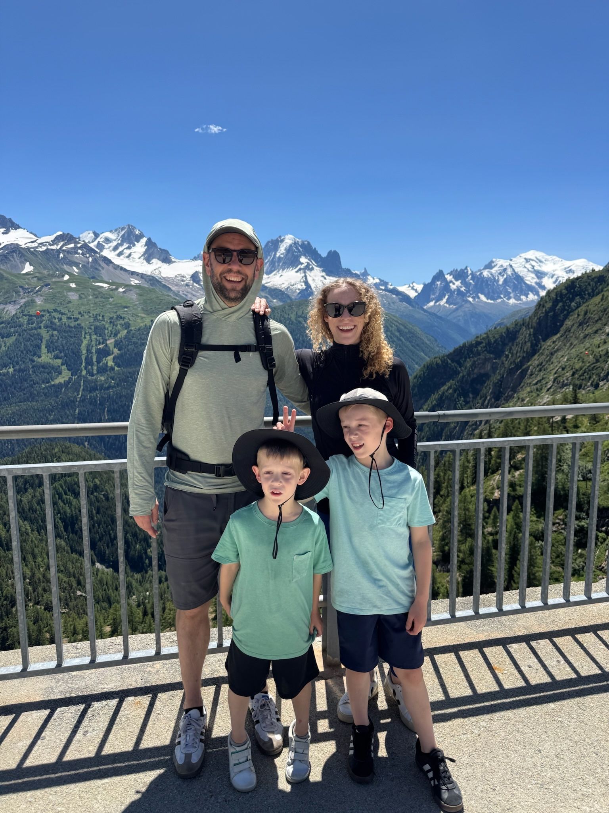
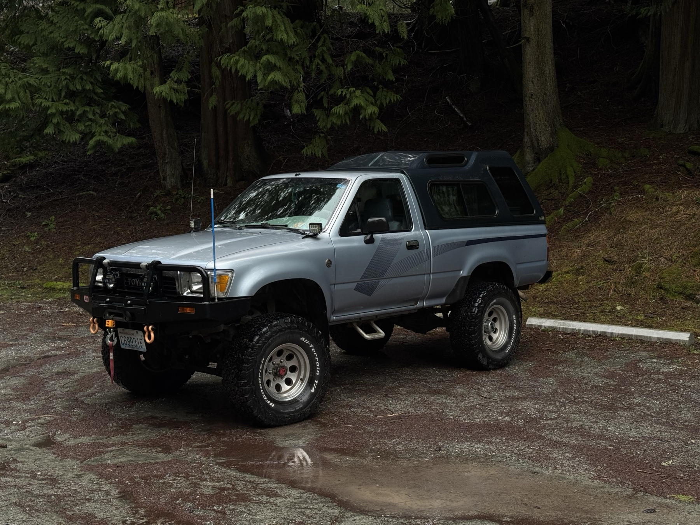

Making
Woodworking
The patient, physical counterpart to my digital life. Currently obsessed with timber framing by hand and Japanese joinery.


Making
The patient, physical counterpart to my digital life. Currently obsessed with timber framing by hand and Japanese joinery.

Life
The funniest group of people you’ll ever meet.
Currently listening

’89 Pickup
Rebuilt to be an old-forest-service-road machine. Almost 40 years old and hasn’t left me stranded …yet.